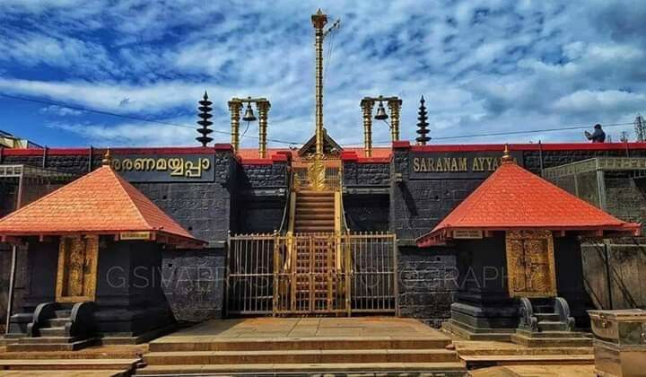
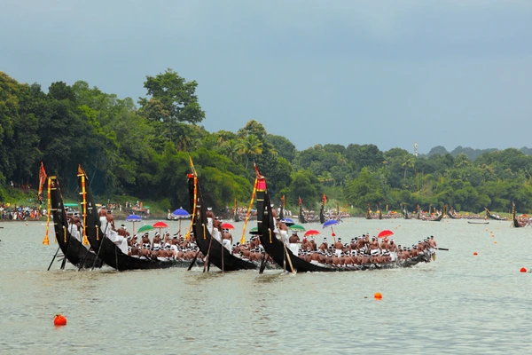
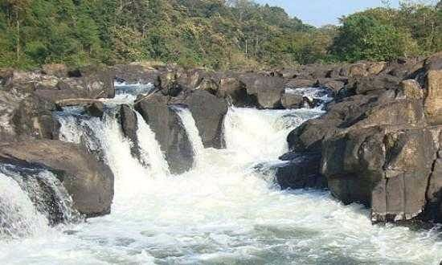
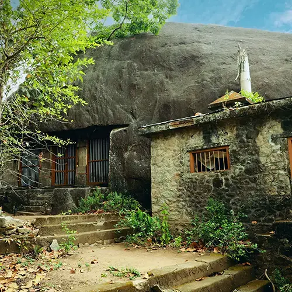
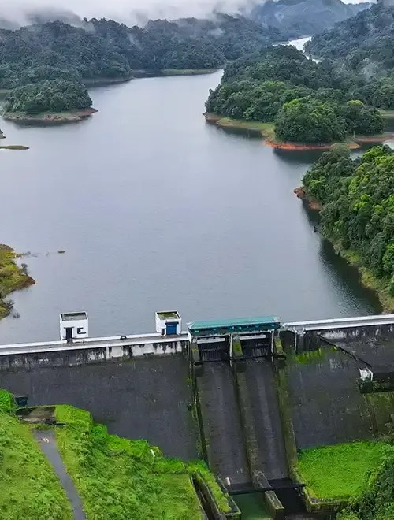
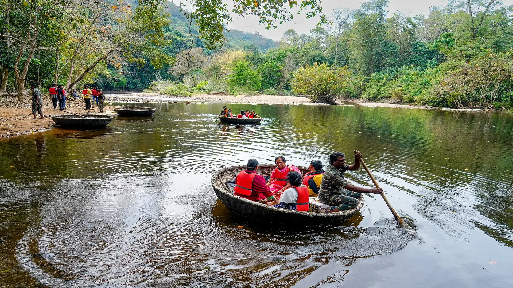

Welcome to Pathanamthitta
Pathanamthitta is known as the spiritual capital of Kerala, with numerous temples and pilgrimage centers. The district is rich in culture and tradition, making it a unique destination for visitors.
Pathanamthitta is a city of rich history, culture, and natural beauty. From ancient temples to serene beaches, it offers a unique blend of tradition and modernity.
History
- Ancient Period: Known for its temple towns and forest heritage.
- Sabarimala Temple: Has roots in ancient Dravidian traditions and Ayyappa worship.
- Pre-Independence: Under Travancore Kingdom; center of spiritual and cultural practices.
- 1982: Officially declared a separate district of Kerala.
- Today: Known as the ‘Pilgrim Capital of Kerala’ and a hub of eco-tourism.
Key Developments:
- Eco-tourism projects in Gavi & Konni
- Road connectivity to Sabarimala improved
- Modernization of healthcare & transport in rural areas
Location Hunt
-

Sabarimala Temple - One of the largest annual pilgrimage centers. Best: Nov–Jan (Mandala-Makaravilakku)
View Map -

Gavi Forest - Eco-tourism gem in Periyar Reserve with safaris and trekking. Best: Oct–Mar
View Map -

Konni Elephant Camp - Elephant rehabilitation and jungle trekking. Best: Sept–Mar
View Map -

Aranmula Temple - Known for boat race and metal mirror art. Best: Aug–Sept (Onam & Boat Race)
View Map -

Perunthenaruvi Falls - Scenic waterfall on the Pamba River. Best: June–Dec
View Map -

Kaviyoor Rock Temple – An ancient rock-cut cave temple dedicated to Lord Shiva, showcasing early Kerala temple architecture. Best: Nov–Feb
View Map -

Kakki Dam – A scenic reservoir nestled in the forest, ideal for boating and nature lovers. Part of the Sabarigiri Hydroelectric Project. Best: Oct–Mar
View Map -

Adavi Eco Tourism – A serene spot for coracle (bowl-boat) rides and jungle experiences on the Kallar River. Best: Sept–Feb
View Map
Cuisine
Pathanamthitta offers a cozy stay for pilgrims, nature explorers, and foodies alike. From local delights like appam-stew and tapioca curry to homely restaurants and forest-facing villas, there's comfort and taste for every traveler.
Hotels & Restaurants
- Hotel Hills Park ★★★☆☆ – Modern amenities near the main town. View Map
- Sabarigiri Tourist Home ★★★☆☆ – Ideal for Sabarimala pilgrims. View Map
- Kattanam Kitchen ★★★☆☆ – Popular for local Kerala cuisine. View Map
- Meem’s Restaurant ★★★☆☆ – Multi-cuisine, family-friendly atmosphere. View Map
- Misty Mountain Villas ★★★★☆ – Forest-facing homestay options. View Map
Festivals
Pathanamthitta, known as the "Pilgrim Capital of Kerala", hosts many colorful and spiritually significant festivals, especially centered around Sabarimala and river-based rituals, showcasing its deep religious traditions.
- Mandala-Makaravilakku – The most important pilgrimage season to Sabarimala Ayyappa Temple, attracting millions of devotees from across India. Celebrated from mid-November to mid-January.
- Aranmula Boat Race (Vallamkali) – A thrilling and prestigious snake boat race held during Onam on the Pampa River, featuring majestic palliyodams and temple rituals.
- Maramon Convention – One of the largest Christian gatherings in Asia, held on the Pampa riverbed, featuring prayer meetings, spiritual talks, and mass congregations.
- Onam – Celebrated with pookalam (floral designs), traditional dances, and Onam Sadya in homes and temples across the district.
- Parumala Perunnal – Annual feast of Saint Gregorios at Parumala Church, marked by grand processions, prayers, and spiritual devotion.
- Christmas & New Year – Churches across Pathanamthitta are beautifully decorated with stars, lights, and carols, creating a festive atmosphere in both towns and rural areas.
Transportation
Pathanamthitta is well connected via air, rail, and road. The nearest airport is Trivandrum International Airport, offering domestic and international flights. Buses, autos, and cabs are easily available for local travel.
Transportation
- Trivandrum International Airport – Approx. 100 km. Contact: +91-471-2702311 – Nearest airport with domestic and international flights. View Map
- Chengannur Railway Station – Approx. 25 km from Pathanamthitta. Enquiry: 139 – Nearest railway station with frequent trains to major cities. View Map
- KSRTC Bus Station – Pathanamthitta – Contact: +91-468-2222366 – Central hub for state and inter-district buses. View Map
- Private Bus Stands – Local and regional bus services to nearby towns and villages available across the district.
- Taxi & Auto Rickshaw Services – Widely available locally or via call centers. Popular apps include Uber (in select areas), Ola, and local operators.
- Boating – Aranmula & Mannar – Traditional and cultural river routes, especially scenic during festival seasons.
Contact
For more details or personalized tour plans, contact the Pathanamthitta Tourism Office:
District Tourism Promotion Council (DTPC),
Near KSRTC Bus Stand, Pathanamthitta - 689645, Kerala, India
Emergency Contacts:
- Police: 100
- Fire & Rescue: 101
- Ambulance: 102 / 108
- Women Helpline: 1091
- Child Helpline: 1098
- District Hospital: +91-468-2222362
- Collectorate: +91-468-2222513
Key Government Contacts:
- District Collector: collector.pta@kerala.gov.in
- Municipality Office: +91-468-2222220
- Tourism Office: +91-468-2222143